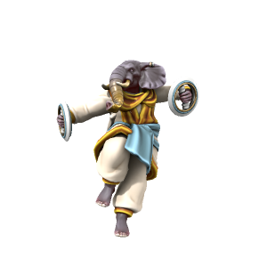

Loxodon

Native to what is now the elven kingdom of Kashar, loxodon are a people with deep and rich cultural history. Loxodonic legends tell of the first loxodon being born to a fey who fell in love with one of the early ancestors of the orcish people.